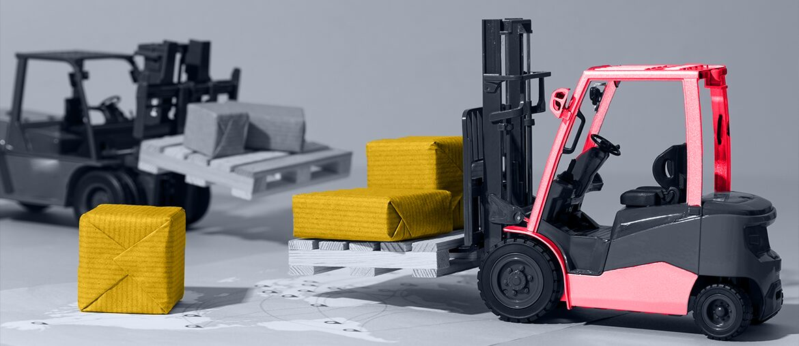

Map the gates
Map vendor intake, approval gates, and QA evidence across Industry Services and Inlight flows, with owners named.
Prepared for Jan Bures and Intertek Italia
A focused proposal for adding engineering and QA depth while your team keeps ownership of partner rules, quality proof, and delivery priorities across Italy and global programs.
Why we're here: Saw the Vendor Management Support role in Cernusco sul Naviglio. This looks like a moment to tighten partner delivery, testing, and proof across Industry Services.
Signal to squad
The role tells us Intertek is formalising how external partners are chosen and checked. For a Global Technical Scheme Manager, the hard part is not finding vendors. It is keeping delivery clear across textile schemes, supplier data, portals, and audits. If each partner reports quality in a different way, Jan's team chases evidence. That slows delivery and makes partner growth harder to trust.
We would start with a dedicated squad under your PO or technical owner.
Map vendor intake, approval gates, and QA evidence across Industry Services and Inlight flows, with owners named.
Build one delivery board with status, risk notes, test evidence, and handoff rules for partner tasks.
Automate regression checks for portal, API, and mobile-critical flows before releases reach scheme teams or clients.
Hand over playbooks and test suites so vendor support can manage partners with less rework later.
Elinext is a full-cycle software development company, active since 1997. We have about 700 in-house specialists and no freelancers. We build web, mobile, QA, DevOps, and enterprise systems for regulated teams. For Intertek, the fit is senior capacity plus ISO 9001 and ISO 27001 discipline. Our named clients include Siemens, Broadcom, Volkswagen, TRUMPF, and TUI. We can join your vendor framework and work under your governance. Your team keeps control while our people add delivery depth. That matches the squad above: practical help, with quality proof from week one.

Elinext improved a certification platform for a century-old international company in inspections and collateral management.
Relevant stack: Java, Spring, Angular, PostgreSQL, TypeScript, and Docker.
Read case study
Elinext ran manual and automated testing for a regulated financial web app.
The work improved coverage, release speed, and risk control over a long engagement.
Read case studyWe can shape a pilot around your current partner workflow.
Talk to Elinext